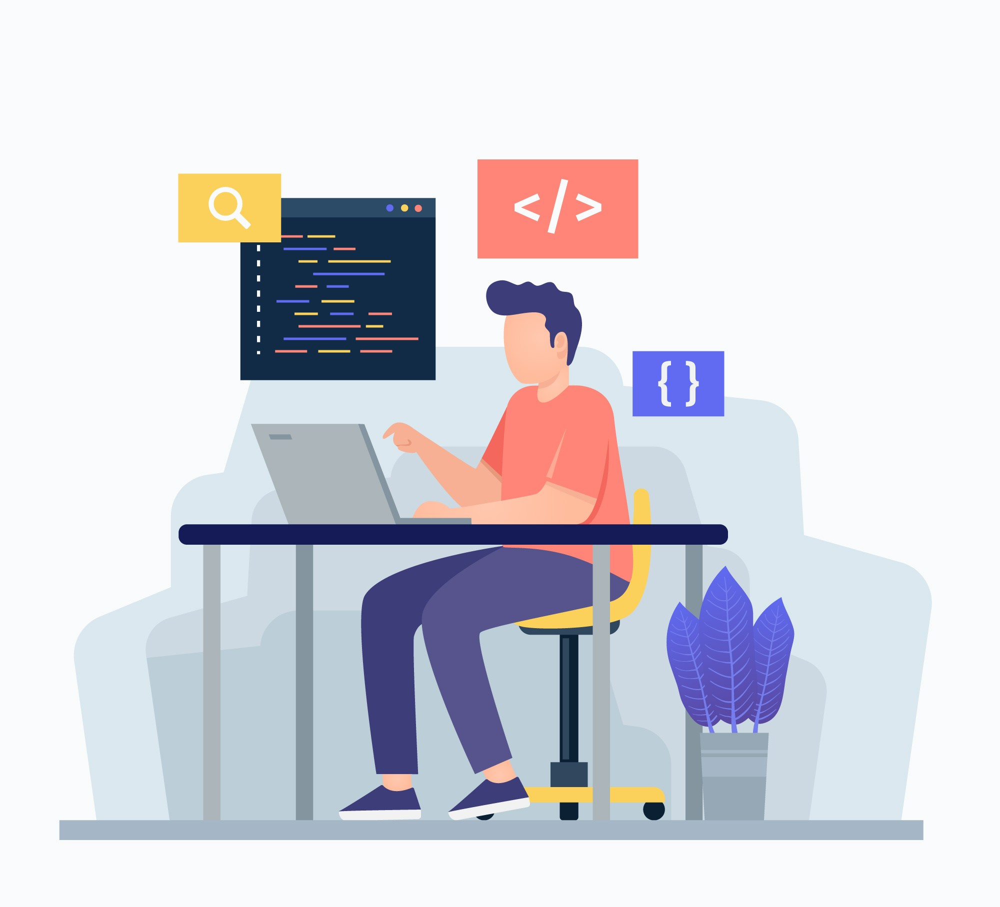
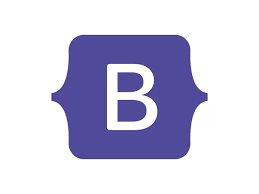

I am web developer with a passion for building clean and responsive websites.
I specialize in HTML, CSS, and Bootstrap, and I’m currently sharpening my skills in web design and JavaScript.


I have a solid foundation in HTML and use it to structure clean, accessible, and semantic web pages. I'm confident in writing well-organized markup and understand how to effectively use elements, attributes, forms, and media to build the backbone of any website. My HTML skills ensure that every project starts with a strong and SEO-friendly structure.

I'm comfortable using CSS to style and layout websites, bringing structure to life with design. I understand how to use selectors, properties, and values effectively, and I’ve worked with positioning, flexbox, and grid to create responsive, mobile-friendly layouts. I'm still learning advanced concepts, but I enjoy experimenting with styles and animations to improve user experience.

I'm comfortable using CSS to style and layout websites, bringing structure to life with design. I understand how to use selectors, properties, and values effectively, and I’ve worked with positioning, flexbox, and grid to create responsive, mobile-friendly layouts. I'm still learning advanced concepts, but I enjoy experimenting with styles and animations to improve user experience.
Have a project in mind or just want to say hello? I’d love to hear from you! Feel free to reach out via email or connect with me on social media.